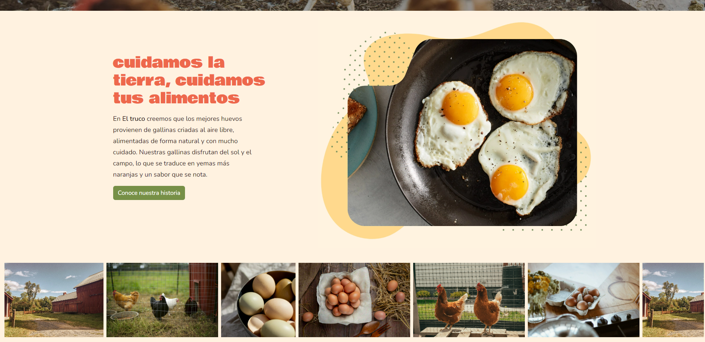

Website El Truco
E-commerce sostenible de huevos orgánicos


Contexto
Este proyecto nació como una propuesta de comercio electrónico para una granja local dedicada a la producción de huevos orgánicos. El objetivo fue crear una presencia digital moderna, con una estética cálida y natural que transmitiera confianza y sostenibilidad.
Rol y Tecnologías
- Rol: Diseño UI/UX, desarrollo front-end y estructura base del sitio.
- Tecnologías: HTML, CSS, JavaScript, Bootstrap, diseño responsivo.
Desafíos y Soluciones
Uno de los principales retos fue equilibrar la identidad visual orgánica con una estructura profesional y moderna. Se implementó una paleta de colores naturales, animaciones sutiles y un diseño adaptable a dispositivos móviles. También se optimizaron las imágenes y el código para lograr tiempos de carga rápidos.